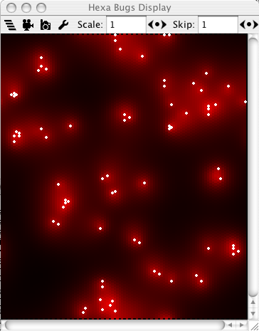
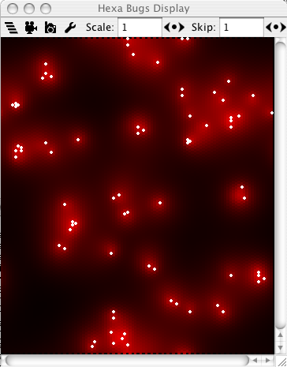You do not need to know much about Java to use this Tutorial.
Before you begin this tutorial, unpack MASON and run it as described here. After you have started up MASON, you will be presented with a window which looks roughly like this:
From the list, select the HeatBug application, and press OK.
Two new windows will have automagically appeared. One has the title bar labeled "Heat Bugs Display", and it is a display window. The other one is has the title bar labeled simply "Heat Bugs", and this is a console window. We will talk about each of the two types in the next two subsections; we'll start with the console. 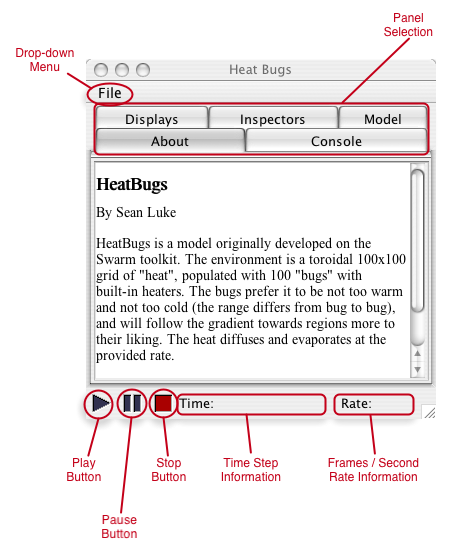
The Play button allows the user to start a simulation. If the simulation is paused, pressing the play button advances the simulation a single time step.
The Pause button allows one to pause the simulation. This may be quite handy for inspecting a fast simulation. Once paused, the simulation may be either advanced by a single step (by pressing the play button), or continued by pressing the pause button again.
The Stop button completely stops a simulation. Once stopped, a simulation cannot be restarted.
The other two labels on the console show the current time step of the simulation, and the frame/second rate. Due to drawing in multiple windows, Java may get slower when this information is updated. To hide it, click on either the current time step or on the frame/second rate.
Lets take a look at the Console panel.
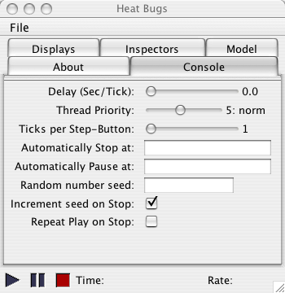 The Console panel contains useful settings for the simulation. The first three slides allow one to insert some delay time between each time step (in case the simulation is too fast), to increase the priority of the simulation thread, and to execute any number of steps upon pressing the play button (when the simulation is paused).
Next, there are three text areas where one can specify the time step where the simulation should stop or pause (once stopped, a simulation cannot be resumed), or set the random seed for the simulation to a certain value. By default, the random seed is incremented whenever the simulation is stopped (so that the next time the simulation is played, it runs with a different seed). Setting the last check button, Repeat Play on Stop, sets MASON to automatically start a new simulation whenever the old one is stopped. This is mostly helpful for kiosk modes.
Now click on the Displays panel.
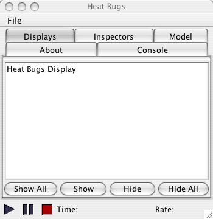 The Display panel allows one to select which displays will be shown, and which will not. Many multi-agent simulations may run much faster without the visualization component. As such, one may choose to hide the display, at least until the emergent effect occurs (for example, the agents cluster to some specific locations), and show the display later on.
Each display is identified by a unique name. To hide a display, the user needs to select it in the list of displays, and then press the Hide button. Alternatively, clicking on the display's close button will hide it. To show a display, the user needs to select it in the list of displays, and then press the Show button. The user may show/hide all displays by pressing the Show all / Hide all buttons.
The Inspectors panel allows the user to inspect objects in the simulation. We will see later on how this may be accomplished.
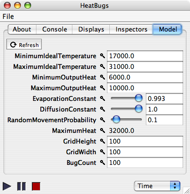 Some applications have a fifth Model panel in the main console window. The Model panel allows the user to modify parameters affecting the entire simulation (as opposed to the Inspectors panel which allows the modification of parameters that affect a single agent). For example, the first line allows us to modify the minimum ideal temperature for all bugs. To do that, click on the text-edit area with 17000.0, and modify it to 20000.0. Do not forget to press ENTER (or RETURN). Often parameters do not take effect until the next played simulation.
Other values may be only viewed, but not modified (read-only parameters). One such parameter is MaximumHeat.
OK, enough with the panels, lets take a look at the drop-down menu.
The drop-down menu allows the user to start a new simulation, to save the current simulation or to load a new one. MASON allows one to have multiple simulations running at the same time. To see how that is possible, click on the menu and select New Simulation. Then choose Woims and press OK. You should see a new set of display/console windows popping up with the simulation. You can start/pause/stop and the application as you may want. When you had enough fun, close it and lets get back to our zeroth tutorial.
| WoimsDemo contains an artificial life example of flocking: agents sense the presence and current state (location, velocity, etc) of other nearby agents, and act accordingly to give an impression of real-life flocking. They prefer not to bump into obstacles or with each other, but also prefer to stick together. The ideas behind artificial flocking were first proposed by Craig Reynolds, who got an Academy Award (Oscar!) for this work! Pretty cool, huh? |
The menu also allows one to save/load the state of the simulation. This is done via the checkpointing mechanisms. More interestingly, checkpointing works with and without graphical interface. As a consequence, one may start the simulation without graphical interface, and have it save the state of the simulation periodically. Later, a MASON simulation with graphical interface may be used to visualize the progress of the multi-agent simulation. Earlier, we ran the HeatBugs application without graphics, and it saved a whole bunch of checkpointing files. Lets load one for a second. Go to the File menu, and select Open. A dialog opens to select the desired checkpoint file. Locate the the hb.1500.checkpoint file saved earlier, and click the Open button. This will load the state of the earlier simulation after 1500 timesteps. Pressing play will continue the simulation from this state on.
| 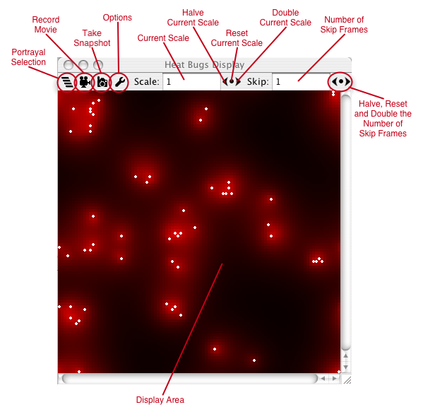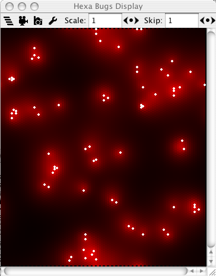 |
The display window contains a small but useful toolbar. The first button, Field Selection allows the user to specify which fields will be displayed. A field is a way of storing objects and associating them with locations. Click on the field selection button, and you will see a small list of names. HeatBugs contains two fields, one with agents and one with the heat. Both are checked, which means that both will be displayed. If you uncheck one of them (for example, the one marked Bugs), the heat bugs will not be displayed anymore (but they will still exist in the simulation).
MASON allows for a wide variety of fields. Aside from the simple 2-D grid field, MASON also has hexagonal and continuous fields. Check the HexaBugsWithUI and WoimsDemoWithUI applications for examples. A snapshot of the HexaBugsWithUI application is presented to the right.
With MASON, 2-D fields may also be visualized in 3-D. See the HeatBugs3DWithUI application in the sim3D library. A 2-D-in-3-D visualization is presented below.
It is really useful to demonstrate your work to others. For this purpose, we included a Record Movie and a Take Snapshot button. Movies usually fit nicely into presentations, talks, and possibly web pages. Additionaly, snapshots could improve papers and reports. Taking movies is easy: click on the record movie button, and select an encoding. The movie will contain a frame for each frame that is displayed in the MASON Display Window. Therefore, it may be a good idea to reduce the size of the movie by increasing the number of skip frames (as described later in this tutorial). To stop recording the movie, press the record movie button again (meanwhile, the icon of the record movie was slightly changed to contain a big STOP sign while the movie is being recorded). Taking snapshots works also very easy: upon pressing the take snapshot button, a small dialog pops up asking for the name and location of the snapshot.
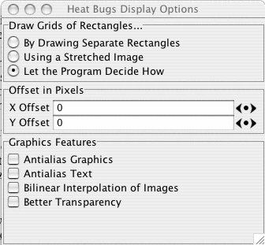 Click on the Options icon, and you will probably see this dialog appear. We were able to significantly speed up the display of some fields by drawing to images and than splashing the images to the window. However, in some other systems, this was relatively slower than the original drawing. We tried to customize MASON to automatically detect which is the better setting. However, the options window allows the user to try both settings and see which gives better results.
Also, the user may translate the display as desired by specifying X and Y offsets. Last, the Graphics Features allow one to customize the graphics settings even more. On some machines, this may result in faster or better vizualization.
Back to the display. The user may scale up or down the visualization in order to concentrate on specific parts of the environment. To do that, he/she may either set a desired scale, or play with the arrows for halving or doubling the current scale. The scale may also be reset to 1 by pressing the belly button.
In some applications, the environment may not change drastically between consecutive time steps. However, redrawing everything may slow down the entire simulation. In such cases, it may be desirable to skip some of the frames. The Skip specifies one in how many time steps will pass between frame updates. The default value is 1 - all frames will be displayed. By setting the value to 2 for example, only every other frame will be displayed.
| You do not necessarily have to pause the simulation, you may inspect it as it is running as well. For example, you may easily inspect information with fixed location (for example, the heat at a specific grid location). Nonetheless, with agents moving around very fast, it may be difficult to select them for inspection. |
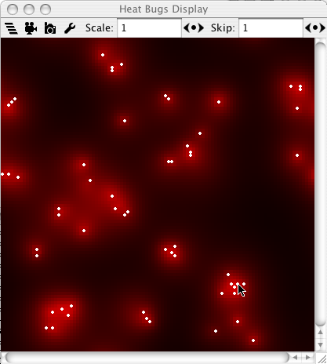 This is how the environment looks like in our simulation (yours will probably be different, depending on the random seed you are using). We took the snapshot after about 500 time steps, when we already start seeing small clusters of agents.
Now, move your cursor over one of the white dots (agents/bugs). When this is accomplished, double-click on the white circle. The Display window has not modified in any way. However, the Console window now shows the Inspectors panel which has been updated with some interesting information. It appears I have selected the grid location (75,78). In my case, the Inspector panel shows information about both the heat, and also about the single agent at that location. In your case, you will probably see information about another location. It may also be that you see more than an agent (multiple agents may occupy the same location in this problem domain). If you see no agent, you probably have not double-clicked on a white circle at the previous step. You may need more double-clicking practice, so you may want to retry that step.
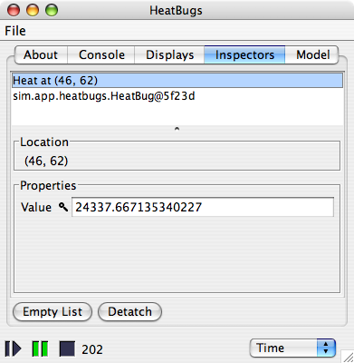 The information on the heat contains the location of the grid (in this case, 75 on the X axis and 78 on the Y axis). Also, we can see the amount of heat at the specific location (in our case, about 24337). We can modify the heat at this location: to do this, select the heat value and replace it with another value, then press ENTER. For example, we may replace 24337.667135340227 by some other value, say 0.0. This will take effect immediately in the simulation. To see this is the case, hide the bugs from the Field Selection button. As we reset the heat to zero, you will see a black dot where the selected agent was.
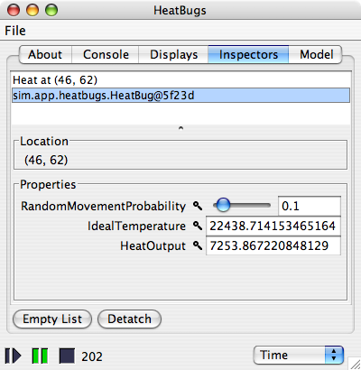Now return to the Inspectors panel, and select the sim.app.heatbugs.HeatBugs line (if multiple bugs, select the first). The snapshot on the left shows our selection. In fact, the inspector tells us that one of the objects displayed at the location we double-clicked is an instance of the sim.app.heatbugs.HeatBug class, which represents a bug.
We notive that the agent has the same location (75,78), not very surprising! Then, we see other information particular to the specific agent. For this application, the agents have a random movement probability (0.1 for this agent), an ideal temperature (what temperature it prefers in the environment), and a heat output (how much heat it contributes in the environment). You may modify each of those three values at your own will. Notice though that you may modify the random movement probability (and some other parameters) for all the agents in the simulation by simply modifying them in the Model panel. 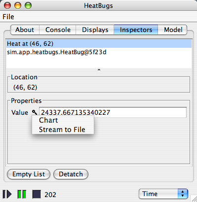
Now, press the pause button again to continue the simulation. Automagically, the information is updated for both the heat (the heat amount) and for the heat bug (the location). This incurs a slight decrease in simulation speed, which is somewhat expected.
The Inspectors panel contains two additional buttons: Empty List and Detatch. If you wondered what they do, now it's the time to find out! The first one will empty the list of things being inspected. This will eliminate the extra cost of updating/displaying information for the inspectors, and the simulation will get faster. 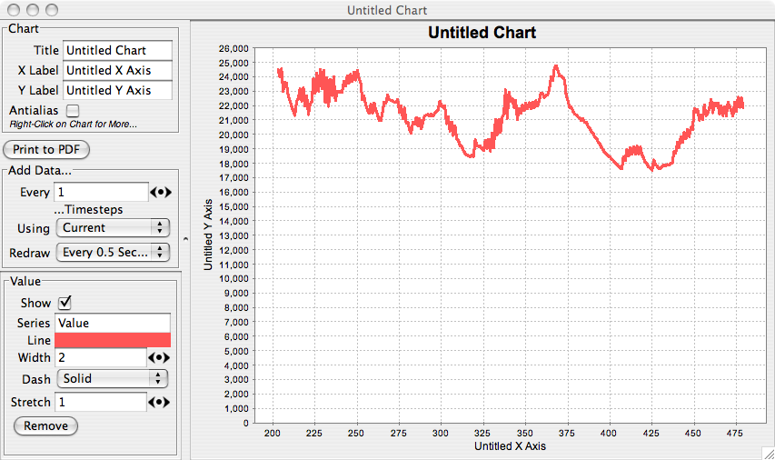
The other button detaches the inspector information into a separate window. Why is this helpful? Because if you want to inspect another agent or heat grid, the inspector list automatically erases the previous inspectors. So, if you want to observe something (information about an agent, for example), it may be a good idea to detach the inspector to make sure that double-clicking (accidental or intentional) will not interfere with your inspector. Once detatched, the inspector may be closed as a regular window.
If you click on the magnifying glass icon, as shown at right, a pop-up menu appears showing additional plug-in inspectors for various properties. In this example, we can chart a value or stream it out. Select "Chart". A charting facility will appear which tracks your chosen property. You can put multiple properties on the same chart (try charting a second property and see for yourself). Here's a picture. 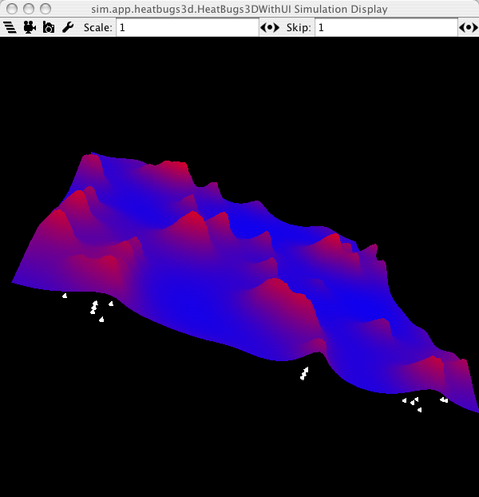
MASON may be used in combination with Java3D to display 3D models. This may be accomplished in two ways. The user may use the same 2D fields, but visualize them in 3D. The heatbugs3d application shows the heatbugs model visualized in 3D, where heat information is used for the third dimmension. A second approach involves using MASON's 3D fields: check out the woims3d application for an example.
Java3D allows one to rotate, translate and zoom in the 3D visualization. Depending on the operating system, this may be accomplished by pressing and holding the mouse button down, followed by moving the mouse cursor, possibly in combination with the CTRL or ALT keys.
With all this information, you should be able to explore the already existing MASON applications. You should also check out the tutorials for additional information on how to start coding your own MASON applications.
We hope you will enjoy our system!
The MASON Team